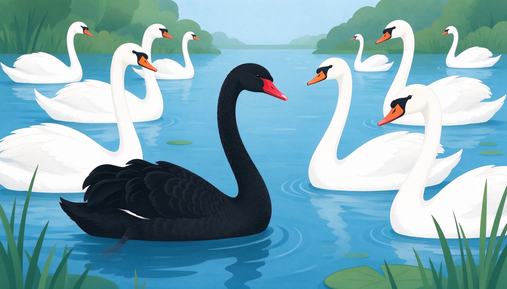
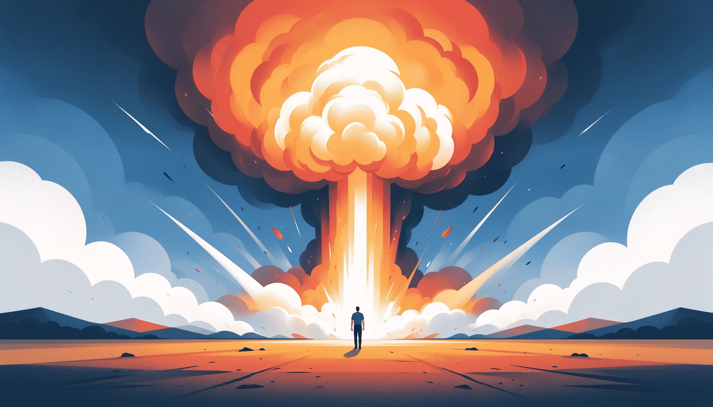
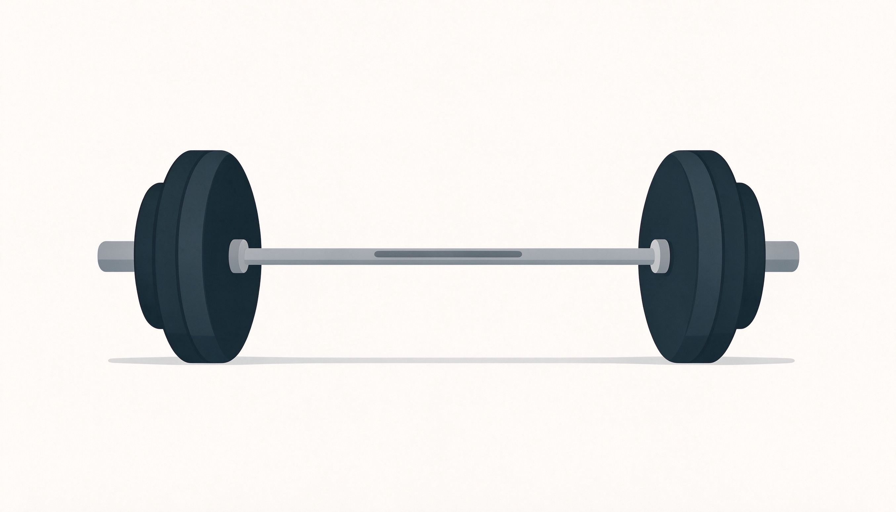

纳西姆·塔勒布 · 不确定性思想家 · 杠铃策略
不可预知极端事件事后解释杠铃策略反脆弱人最幸福的时刻不是躺着刷手机，而是全神贯注做一件有挑战的事。心流，是主动掌控人生的方法。
黑天鹅有三个特征：罕见、影响巨大、事后被解释得理所当然。金融危机、疫情、技术革命，都是黑天鹅。塔勒布的核心观点：我们以为世界可预测，其实重大事件全是意外。应对之道不是预测，而是准备——承认无知，构建杠铃，让不确定性为自己服务。
专家们对明天的预测，准确率不比抛硬币高多少；对十年后的预测，几乎全是错的。为什么？因为世界由黑天鹅驱动，而黑天鹅恰恰是不可预知的。承认自己的无知，比假装全知更接近真相——塔勒布说，这是唯一理性的态度。
股市90%的时间都在小幅波动，但那10%的极端行情决定了你的总收益；一个人的一生，可能就被几次重大选择定义。极端事件罕见，但一旦发生，影响力远超所有日常事件之和。忽视极端事件，等于把命运交给概率的骰子。

黑天鹅发生后，人人都能编出完美的解释链：早就该看出来了、信号明明很明显。这就是叙事谬误——人类大脑用故事解释世界，但故事是事后拼凑的，不是事前预见的。警惕一切马后炮：别人信誓旦旦的复盘，可能只是事后诸葛亮。
火鸡被喂养了1000天，每天都更安心，直到感恩节前一天。前1000天的经验没有给它任何预警。这就是归纳法的陷阱：过去的数据不能证明未来安全。连续十年上涨的资产，恰恰积累了暴跌的隐患。投资中，越安全的感觉越危险。

杠铃策略：把资产分成极端的两端——90%放在极度安全的资产（现金、国债），10%放在极度进取的冒险（高风险高赔率）。中间的中庸配置最危险：涨不多也亏不多，还失去了两边的机会。杠铃让你保住下限、博取上限，在黑天鹅中立于不败。
脆弱的东西害怕波动，强韧的东西抵抗波动，反脆弱的东西在波动中受益——就像肌肉越练越强、公司越挫越勇。塔勒布说：不确定性不是敌人，是养分。把生活和投资设计成反脆弱结构，黑天鹅砸下来，你反而更强。
解锁你将获得：第 8-10 课完整内容（心法纪律、黑天鹅实战法、总结复盘）+ 全部 16 个互动游戏 + 全部 12 枚徽章 + 深度精读视频。
本书出自「熙祺智书」投资理财专题 · 不确定性。配套阅读：《反脆弱》《随机漫步的傻瓜》《非理性繁荣》。